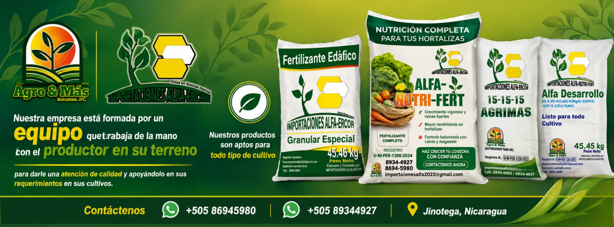

ALFA-ERCOR · AGRO & MÁS
ALFA-ERCOR · AGRO & MÁSNutrición agrícola con propósito
La fuerza del campo comienza desde la raíz.
Fórmulas especializadas, estudio de suelo y acompañamiento técnico para mejorar el rendimiento sostenible de sus cultivos.

Fórmulas especializadas, estudio de suelo y acompañamiento técnico para mejorar el rendimiento sostenible de sus cultivos.
